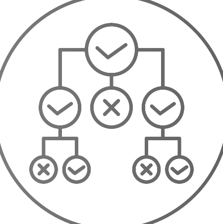

Hidden Markov Model Engine
Developer | Nov 2024 | Raleigh, NC
This HMM Engine is capable of processing files and observed state sequences to perform filtering calculations. Each observed state triggers updates to the probability distribution and recalculates alpha values, aiding in state estimation over time. This engine demonstrates key probabilistic modeling techniques for sequence-based predictions in uncertain environments.
REQUEST ACCESS

Decision Tree Emulator
Developer | Oct 2024 - Nov 2024 | Raleigh, NC
This Decision Tree Emulator implements a decision-making system using decision trees, featuring nodes that represent choices and probabilistic outcomes. The program parses decision trees and enables simulation of different decision paths, allowing exploration of decision-making processes in complex scenarios. This setup can be applied to model uncertainties and assess strategies in various decision-driven environments.
REQUEST ACCESS
Alpha-Beta Tree Optimizer
Developer | Oct 2024 | Raleigh, NC
This Alpha-Beta Tree Optimizer is a Prolog implementation of an alpha-beta pruning algorithm, which efficiently searches a custom-designed adversarial game tree structure. The program models an original game tree within Prolog, using logical representation to evaluate optimal moves while reducing computational complexity.
REQUEST ACCESS
Bandit Simulation
Developer | Sep 2024 - Oct 2024 | Raleigh, NC
Bandit Simulation implements a bandit algorithm system with static and rolling bandits to calculate rewards and select optimal actions in dynamic environments. It enables interaction with simulated environments, tracking user engagement and network connections, and explores reinforcement learning techniques in scenarios involving uncertainty and reward optimization.
REQUEST ACCESS

Pathfinder
Developer | Sep 2024 | Raleigh, NC
Pathfinder implements state space search algorithms for finding optimal paths on a map between cities, represented through Java classes and input files. The program utilizes algorithms such as A*, Recursive Best-First Search (RBFS), and Uniform Cost Search, and inputs for cities and roads to represent geographic and distance data.
REQUEST ACCESS
CoffeeMaker
Full-Stack Developer | Jan 2024 - Apr 2024 | Raleigh, NC
Coffeemaker is a full-stack web application I built as part of a team of developers that emulates embedded software for coffee machines using MySQL database, AngularJS framework for front-end, and Java for back-end/REST API implementation.
REQUEST ACCESS
Trader
Developer | Oct 2023 | Raleigh, NC
Trader manages financial accounts by loading account data, processing buy/sell transactions, and saving updated balances to incremented file versions. It validates currency formats, checks for arithmetic overflow, and provides error handling to ensure accurate transaction processing.
REQUEST ACCESS
Personnel Recordkeeper
Developer | Sep 2023 | Raleigh, NC
Personnel Recordkeeper reads and standardizes personal information, including names (Last, First), DOBs (ISO 8601), and SSNs. It processes and ouputs individual records and provides a key statistics report.
REQUEST ACCESS
Parks Catalog
Developer | Oct 2023 - Nov 2023 | Raleigh, NC
Parks Catalog manages information about parks. The program allows users to load park data, display park data, and calculate distances between parks based on geographical data. Key features include creating and managing catalog structures, sorting and filtering parks, and a UI to list parks, manage trips, and compute trip data.
REQUEST ACCESS
DES Cipher/Decryption Tool
Developer | Nov 2023 | Raleigh, NC
This project implements the Data Encryption Standard (DES) algorithm, enabling secure data encryption and decryption through a 16-round symmetric key process. It includes bitwise manipulation functions, key generation, and custom file I/O to handle binary data securely. Unit tests ensure the accuracy and reliability of each encryption and decryption step.
REQUEST ACCESS

WolfHire
Developer | May 2022 | Raleigh, NC
WolfHire is a hiring system built with Java that imports and manages job positions and their applications. It implements file I/O and the finite state machine model to maintain applications and their progress.
REQUEST ACCESS
WolfTickets
Developer | Apr 2022 | Raleigh, NC
WolfTickets is an IT ticket system built with Java to manage help-request tickets for groups. It implements inheritance/polymorphism relationships and utilized various linear data structures. Designed & developed data organization tools to enhance system performance.
REQUEST ACCESS